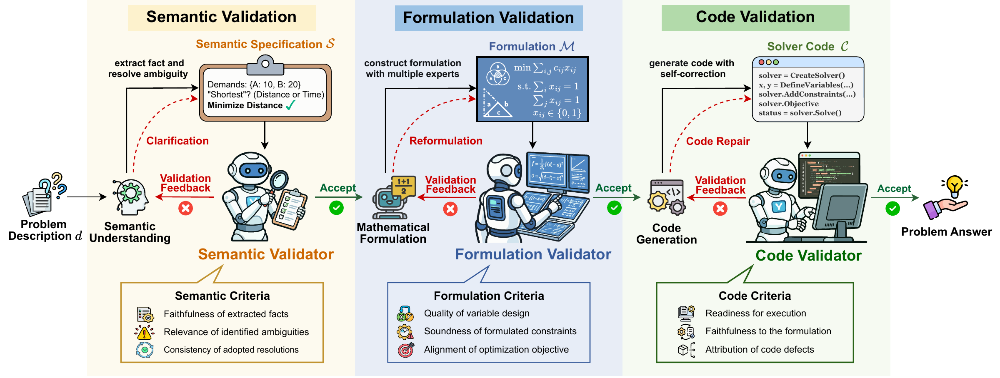
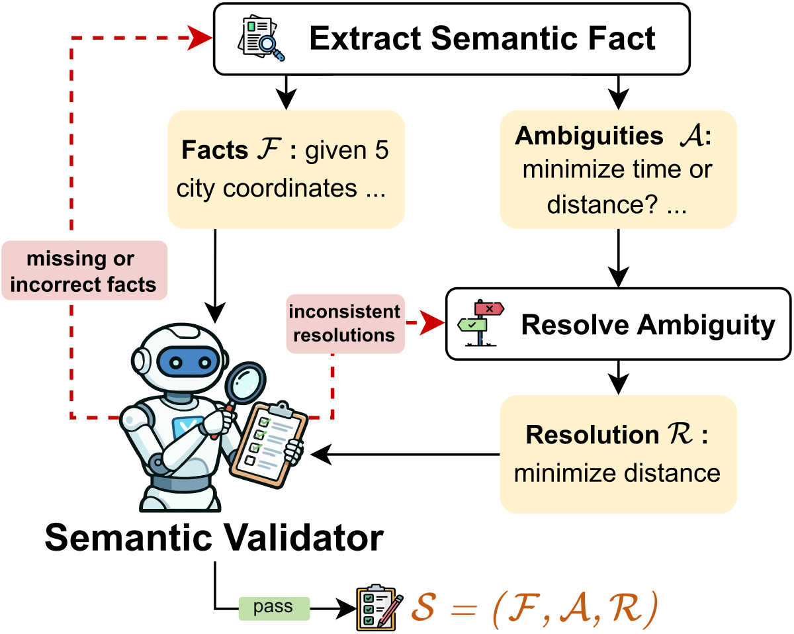
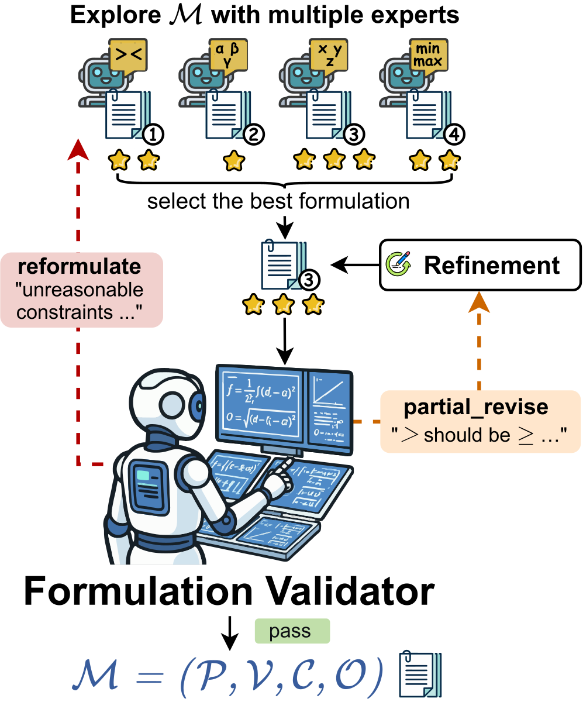
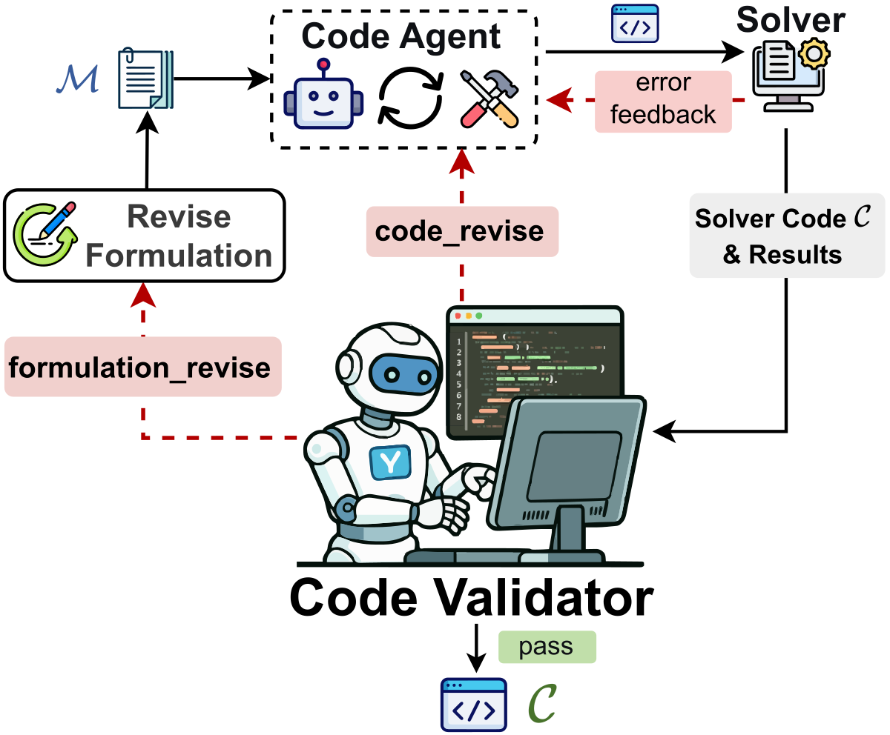
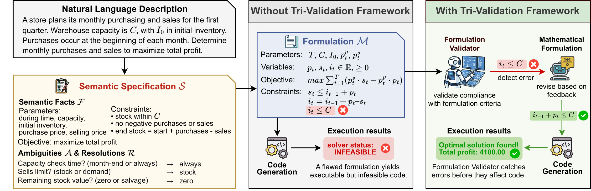
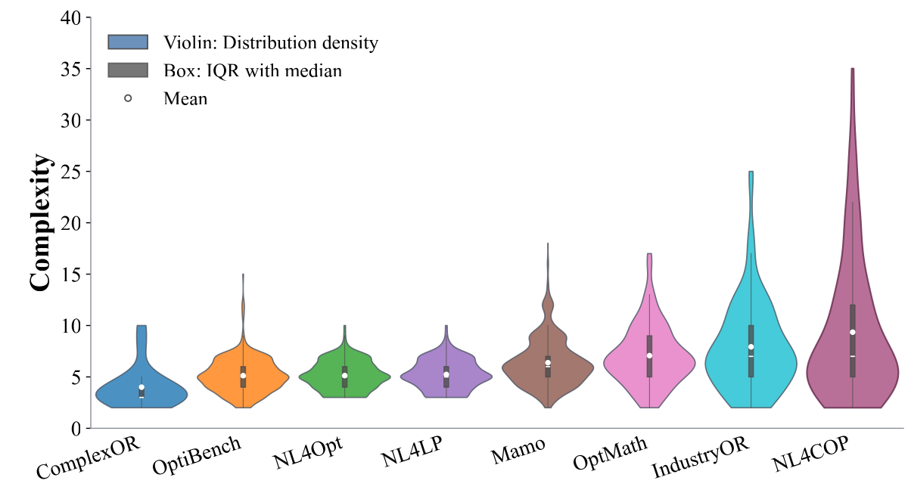
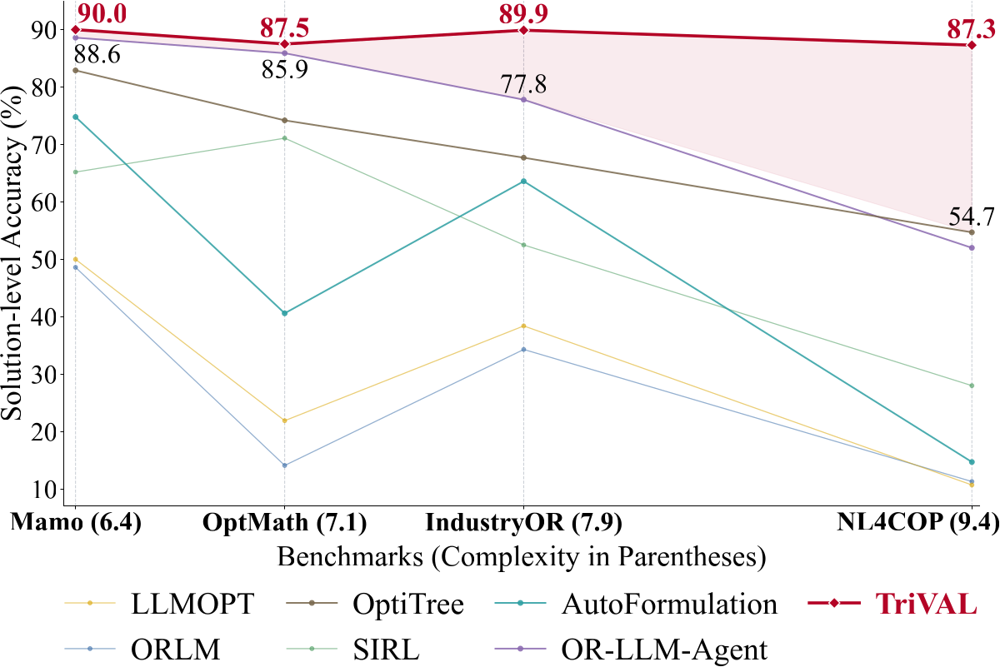

arXiv 2605.23966May 2026
TriVALA Tri-Validation Framework for Faithful Automatic Optimization Modeling
Abstract
TriVAL translates a natural-language optimization problem into solver code. It checks the interpretation against the problem description, the mathematical formulation against that interpretation, and the code against the formulation. We introduce NL4COP to evaluate this approach on 150 combinatorial problems with interacting constraints.
NL4COP solving accuracy
DeepSeek-V3.2 · best of five runs
Introduction
Paper §I ↗A solver optimizes the objective and constraints it receives. In automatic modeling, the difficult step is deciding which objective and constraints express the problem someone described.
Consider a store that purchases stock at the beginning of a month and sells it during that month. A warehouse can be within capacity at month-end even if it overflowed when the delivery arrived. The timing of the check changes which purchasing plans are feasible. Code that faithfully implements a month-end check carries that modeling decision all the way to the solver.
Each translation introduces a different opportunity for error. The initial reading can omit when deliveries arrive. The equations can use the wrong inventory variable even when the timing is understood. The program can apply a correct constraint to the wrong months. Locating the first discrepancy tells the modeler what to revise.
ORLM and LLMOPT train models on examples that connect problem descriptions to formulations and code. OR-LLM-Agent divides modeling, code generation, and debugging into stages. AutoFormulation scores candidate formulations during search, while OptiVer examines the structure and solutions of a completed model.
TriVAL makes each intermediate result available for inspection while its source is still explicit. An ambiguity can be revisited in the original wording, a constraint can be traced to the requirement it expresses, and a solver call can be compared with the equation it implements. The choice of what to check determines where feedback goes next. Method comparison in Table I ↗
The method
Paper §III ↗Given a problem description, TriVAL constructs a semantic specification S, a mathematical formulation M, and solver code C. At each stage, an LLM-based validator compares the current result with its sources and identifies what needs revision. The next stage uses the resulting specification or formulation.

Semantic validation Problem understanding
Record the decisions implicit in the text
The semantic fact extractor records the inputs, decisions, requirements, and objective. It also identifies readings that would give different models. In the warehouse example, purchase timing is a stated fact. The point at which capacity must hold is a modeling interpretation. Keeping them separate makes that choice visible.
The ambiguity resolver records an interpretation for each consequential ambiguity. The semantic validator then rereads the original text to find missing or unsupported facts, examine whether each ambiguity changes the formulation, and check the evidence for the adopted reading. Its feedback identifies the fact, ambiguity, or resolution to amend.
Semantic prompts and implementation ↗

Formulation validation Mathematical modeling
Select a formulation, then test its modeling choices
A routing decision can be represented by the order of visits or by the edges a vehicle uses. The choice changes how the constraints must be written. TriVAL explores alternatives through four experts who focus respectively on parameters and indices, decision variables, constraints, and the objective. Each independently produces a complete model from the same specification. A selector weighs the candidates’ correctness, variable design, and compactness and chooses one.
The formulation validator compares the chosen variables, constraints, and objective with the specification and the original description. If a capacity bound uses the wrong time index, it can revise that expression locally. If the variables cannot represent a required decision, the validator sends feedback to all four experts to construct new candidates.
Formulation prompts and implementation ↗

Code validation Executable translation
Use execution feedback to locate the defect
A code agent writes the solver program, runs it, and uses runtime errors to repair problems such as an incorrect solver call. Once the program executes, the code validator reads the program and the solver output alongside the formulation. It checks variable types, index ranges, constraint coverage, and the direction and expression of the objective.
If the formulation requires a capacity check every month and the code skips one, the code agent repairs the implementation. If the code implements the equations as written and the solver reports an abnormal result, the validator can attribute a defect to the formulation. TriVAL then revises the equations and regenerates the code.
Code prompts and implementation ↗

Acceptance ends a validation loop. Reaching a stage’s round limit also ends that loop, so the next step can inherit a remaining error. The paper’s algorithm specifies the revision paths and stopping conditions for all three stages. Algorithm 1 ↗
Case study
Paper Fig. 7 ↗Warehouse capacity in monthly purchasing
In the paper’s first-quarter inventory problem, the store chooses monthly purchases and sales to maximize profit. The semantic specification records that capacity must hold throughout the month. The initial formulation checks inventory only after the month’s sales.
it ≤ C
Checks stock remaining at month-end, after sales.
it−1 + pt ≤ C
Checks opening stock plus purchases, before sales.
Here it is closing inventory, pt is the quantity purchased, and C is capacity. For illustration, suppose capacity is 10 units. The store starts with 8, buys 4, and sells 5. Closing inventory is 7, so the first inequality accepts the plan. The delivery briefly brings stock to 12, so the revised inequality rules it out.
In the reported case, the formulation validator identifies the timing error by comparing the inequality with the semantic specification. Replacing the capacity constraint preserves the variables and profit objective. The revised program reports an optimal profit of 4,100.
Original case-study figure


NL4COP
Benchmark files ↗Interacting constraints put all three modeling stages to work. A routing decision can affect the remaining load of a vehicle and which customers it can serve next. NL4COP tests this kind of discrete reasoning across 50 problem types, each represented by a simple, medium, and hard instance.
Across the 150 instances, difficulty varies with the amount of data, the length of the description, and the complexity of the constraints. Including all three levels within each type lets us examine what happens as modeling becomes harder while keeping the mix of problem types fixed.
Each record contains a natural-language description, a reference solution, and executable reference Python code. The authors ran the reference solvers to check feasibility. Two operations research experts independently cross-checked the description, code, and reference answer for consistency.
Benchmark complexity
The paper characterizes the tasks before evaluating the models. Across NL4COP, descriptions average 3,249 characters, and mean modeling complexity is 9.4 on the paper’s scale. IndustryOR averages 1,046 characters and 7.9 on the same measure. The three difficulty splits then let us examine accuracy within NL4COP itself.


Employee–task assignment
Assign ten employees to ten tasks, one task per employee, minimizing total hours. The reference assignment costs 145 hours.
Browse all 50 problem types
Each link opens the complete record and its reference solver.
| Problem type | Simple | Medium | Hard |
|---|---|---|---|
| Aircraft Landing Scheduling Problem | Simple | Medium | Hard |
| Assignment Problem | Simple | Medium | Hard |
| Assortment Problem | Simple | Medium | Hard |
| Bin Packing Problem | Simple | Medium | Hard |
| Capacitated P-Median Problem | Simple | Medium | Hard |
| Capacitated Vehicle Routing Problem | Simple | Medium | Hard |
| Capacitated Warehouse Location Problem | Simple | Medium | Hard |
| Chinese Postman Problem | Simple | Medium | Hard |
| Constrained Guillotine Cutting Problem | Simple | Medium | Hard |
| Constrained Non-Guillotine Cutting Problem | Simple | Medium | Hard |
| Container Loading Problem | Simple | Medium | Hard |
| Container Loading with Weight Restrictions Problem | Simple | Medium | Hard |
| Covering Location Problem | Simple | Medium | Hard |
| Crew Scheduling Problem | Simple | Medium | Hard |
| Equitable Partitioning Problem | Simple | Medium | Hard |
| Flow Shop Scheduling Problem | Simple | Medium | Hard |
| Generalised Assignment Problem | Simple | Medium | Hard |
| Graph Coloring Problem | Simple | Medium | Hard |
| Hybrid Reentrant Shop Scheduling Problem | Simple | Medium | Hard |
| Job Shop Scheduling Problem | Simple | Medium | Hard |
| k-Shortest Paths Problem | Simple | Medium | Hard |
| Location-Routing Problem | Simple | Medium | Hard |
| Maximum Clique Problem | Simple | Medium | Hard |
| Maximum Flow Problem | Simple | Medium | Hard |
| Maximum Independent Set Problem | Simple | Medium | Hard |
| Minimum Cost Maximum Flow Problem | Simple | Medium | Hard |
| Minimum Cut Problem | Simple | Medium | Hard |
| Minimum Vertex Cover Problem | Simple | Medium | Hard |
| Mixed Chinese Postman Problem | Simple | Medium | Hard |
| Multi-Demand Multidimensional Knapsack Problem | Simple | Medium | Hard |
| Multidimensional Knapsack Problem | Simple | Medium | Hard |
| Open Shop Scheduling Problem | Simple | Medium | Hard |
| Orienteering Problem | Simple | Medium | Hard |
| Packing Unequal Circles | Simple | Medium | Hard |
| Packing unequal rectangles and squares | Simple | Medium | Hard |
| Period Vehicle Routing Problem | Simple | Medium | Hard |
| Quadratic Knapsack Problem with Conflict Graphs | Simple | Medium | Hard |
| Rectangle Packing Problem | Simple | Medium | Hard |
| Resource Constrained Shortest Path Problem | Simple | Medium | Hard |
| Set Covering Problem | Simple | Medium | Hard |
| Set Partitioning Problem | Simple | Medium | Hard |
| Single Machine Common Due Date Scheduling Problem | Simple | Medium | Hard |
| Traveling Salesman Problem | Simple | Medium | Hard |
| Travelling Thief Problem | Simple | Medium | Hard |
| Uncapacitated P-Median Problem | Simple | Medium | Hard |
| Uncapacitated Warehouse Location Problem | Simple | Medium | Hard |
| unconstrained guillotine cutting problem | Simple | Medium | Hard |
| Unconstrained Non-Guillotine Cutting Problem | Simple | Medium | Hard |
| Vehicle Routing Problem with Time Window | Simple | Medium | Hard |
| Windy Rural Postman Problem | Simple | Medium | Hard |
Benchmark size and modeling complexity
| Benchmark | Instances | Avg. length (chars) | Complexity |
|---|---|---|---|
| ComplexOR | 18 | 1273 | 4.0 |
| OptiBench | 403 | 621 | 5.1 |
| NL4Opt | 205 | 530 | 5.1 |
| NL4LP | 178 | 533 | 5.2 |
| Mamo | 852 | 1225 | 6.4 |
| OptMath | 129 | 3083 | 7.1 |
| IndustryOR | 99 | 1046 | 7.9 |
| NL4COP | 150 | 3249 | 9.4 |
Table II reports the paper’s benchmark statistics. Length is measured in characters.
NL4COP is released under CC BY 4.0. Dataset preparation and third-party terms are documented in the license guide.
Experimental results
Paper §IV-B ↗We evaluate whether a generated program recovers the reference objective on four benchmarks spanning different modeling demands. Mamocomplex covers linear and mixed-integer problems, OptMath includes longer descriptions, IndustryOR draws on industrial settings, and NL4COP emphasizes interacting discrete decisions. Prompt-based methods share the same base model within each comparison. Their main-table scores are the best solving accuracy over five runs.
Evaluation protocol
Each program is executed and its objective is compared with the reference. An instance counts as correct when |ŷ − y| / (|y| + 1) < 10−6. For an unspecified decision-variable type, the evaluation accepts a match under either the integral or continuous interpretation. The study uses OR-Tools and CVXPY, up to five validation iterations per stage and up to twenty execution-feedback rounds, with a 100-second timeout per execution.
Solving accuracy by benchmark
On NL4COP, TriVAL reaches 87.3% with DeepSeek-V3.2, compared with 54.7% for OptiTree, the strongest baseline on that base model. With GPT-5.1, the figures are 81.3% for TriVAL and 68.0% for OR-LLM-Agent. The gap depends on the task. On Mamocomplex with GPT-5.1, OR-LLM-Agent scores 91.0% and TriVAL 90.5%.
Values are percentages. Learning-based methods use their released models. The overall column reproduces Table III.
| Method | Mamo (complex) | OptMath | IndustryOR | NL4COP | Overall |
|---|---|---|---|---|---|
| Learning-based methods · released models | |||||
| ORLM | 48.6 | 14.1 | 34.3 | 11.3 | 29.1 |
| LLMOPT | 50.0 | 21.9 | 38.4 | 10.7 | 31.9 |
| SIRL | 65.2 | 71.1 | 52.5 | 28.0 | 54.9 |
| GPT-5.1 | |||||
| AutoFormulation | 74.3 | 46.9 | 52.5 | 25.3 | 52.1 |
| OR-LLM-Agent | 91.0 | 85.2 | 78.8 | 68.0 | 81.8 |
| OptiTree | 80.5 | 83.6 | 75.8 | 56.0 | 74.1 |
| TriVAL | 90.5 | 87.5 | 86.9 | 81.3 | 86.9 |
| DeepSeek-V3.2 | |||||
| AutoFormulation | 74.8 | 40.6 | 63.6 | 14.7 | 50.1 |
| OR-LLM-Agent | 88.6 | 85.9 | 77.8 | 52.0 | 76.8 |
| OptiTree | 82.9 | 74.2 | 67.7 | 54.7 | 71.2 |
| TriVAL | 90.0 | 87.5 | 89.9 | 87.3 | 88.8 |
Accuracy as problems become harder
The cross-benchmark plot compares different collections of problems. The NL4COP splits hold the 50 problem types fixed. On its hard split, DeepSeek-V3.2 with TriVAL solves 38 of 50 instances (76%), compared with 23 of 50 (46%) for OptiTree.


NL4COP results by difficulty
Each difficulty split contains 50 instances, one per problem type. Table IV gives the breakdown for both base models.
| Method | Simple | Medium | Hard | Overall |
|---|---|---|---|---|
| GPT-5.1 | ||||
| OR-LLM-Agent | 72.0 | 72.0 | 60.0 | 68.0 |
| OptiTree | 52.0 | 56.0 | 60.0 | 56.0 |
| TriVAL | 88.0 | 90.0 | 66.0 | 81.3 |
| DeepSeek-V3.2 | ||||
| OR-LLM-Agent | 56.0 | 56.0 | 44.0 | 52.0 |
| OptiTree | 60.0 | 58.0 | 46.0 | 54.7 |
| TriVAL | 94.0 | 92.0 | 76.0 | 87.3 |
Where validation matters
The main comparison changes several aspects of the modeling process at once. To isolate the role of validation within TriVAL, the ablations keep construction in place and remove one validator at a time. Removing formulation validation produces the largest single-validator drop on NL4COP. That variant scores 73.3–76.0% over five runs. Removing all three yields 66.0–69.3%, compared with the full method’s reported 87.3%.
| Variant | IndustryOR | NL4COP |
|---|---|---|
| Full method | 89.9 | 87.3 |
| Remove semantic validation | 85.9–88.9 | 82.0–86.0 |
| Remove formulation validation | 81.8–85.9 | 73.3–76.0 |
| Remove code validation | 83.8–87.9 | 78.7–84.0 |
| Remove all validation | 76.8–78.8 | 66.0–69.3 |
Tables V–VI. Ablated variants show the minimum and maximum accuracy over five runs. The full-method row uses the paper’s reported reference value.
The error analysis helps explain the drop. On NL4COP, removing validation increases failures attributed to constraint expressions from 12 to 30, variable design from 6 to 12, and code generation from 2 to 4. The largest difference occurs in the equations that define feasible solutions.
Error types on failed instances
The error analysis groups failed instances by code, variable design, and constraint expression. A variable-design error changes which decisions can be expressed. A constraint error changes which combinations of decisions are feasible.
| Benchmark | Variant | Total | Code | Variable | Constraint |
|---|---|---|---|---|---|
| IndustryOR | Full Method | 10 | 1 | 1 | 8 |
| IndustryOR | w/o All Validation | 21 | 1 | 3 | 17 |
| NL4COP | Full Method | 20 | 2 | 6 | 12 |
| NL4COP | w/o All Validation | 46 | 4 | 12 | 30 |
Transfer, formulation quality, and cost
Adding formulation and code validation to OR-LLM-Agent raises its mean NL4COP accuracy from 52.0% to 70.2%. Within TriVAL, giving the validator a formulation selected from four experts raises first-pass acceptance from 30.7% to 46.0% on NL4COP. Validation adds inference cost. The full method uses 62.8k tokens per instance on this benchmark, compared with 41.6k when all three validators are removed.
Adding validation to OR-LLM-Agent
In a separate experiment, the authors insert formulation and code validation into OR-LLM-Agent. Table VIII reports mean accuracy and the range over five runs for the augmented method.
| Benchmark | Original (%) | With validation (%) | Gain (pp) |
|---|---|---|---|
| IndustryOR | 77.8 | 83.2 (82.8–83.8) | +5.4 (5.0–6.0) |
| NL4COP | 52.0 | 70.2 (68.7–72.0) | +18.2 (16.7–20.0) |
Design ablations and formulation quality
The paper also measures the effects of removing construction stages and repair mechanisms. Formulation Pass@1 measures how often the first candidate passes formulation validation.
| Variant | IndustryOR | NL4COP |
|---|---|---|
| Full method | 89.9 | 87.3 |
| w/o Semantic Understanding | 80.8 | 78.7 |
| w/o Formulation Stage | 83.8 | 78.0 |
| Code-Only | 82.8 | 78.0 |
| w/o Multi-Expert | 83.8 | 78.7 |
| w/o Code Self-Correction | 79.8 | 80.0 |
| Benchmark | Variant | Pass@1 (%) | Validation iterations | Execution rounds |
|---|---|---|---|---|
| IndustryOR | Full Method | 51.0 | 2.9 | 1.9 |
| IndustryOR | w/o Multi-Expert | 27.3 | 4.5 | 1.9 |
| NL4COP | Full Method | 46.0 | 3.1 | 2.9 |
| NL4COP | w/o Multi-Expert | 30.7 | 4.8 | 4.1 |
Token cost and error rate
Table XI reports token use together with the observed error rates. Removing validation saves 33.8% of tokens on NL4COP, with the error rate increasing from 12.7% to 30.7%.
| Benchmark | Tokens per instance | Token saving (%) | Error (%) | Error increase (×) |
|---|---|---|---|---|
| IndustryOR | 54.9k / 29.2k | 46.8 | 10.1 / 21.2 | 2.1 |
| NL4COP | 62.8k / 41.6k | 33.8 | 12.7 / 30.7 | 2.4 |
Conclusion and future work
Paper §V ↗In these experiments, checking intermediate modeling decisions improves the share of programs that recover the reference objective. The largest single-validator loss on NL4COP occurs when formulation validation is removed. Decisions about variables and constraint scope determine which solutions reach the solver.
Solving accuracy measures agreement on the objective value for a given instance. Distinct formulations can yield the same value. A remaining challenge is to identify subtle violations across the text, equations, and code, especially when several constraints depend on one another. The paper proposes more problem-specific validation signals, lower validation cost, and extensions to multi-objective, stochastic, robust, and dynamic optimization.
Run TriVAL
Installation guide ↗The public implementation uses Python 3.13, uv, and a DeepSeek API key. Install the dependencies and copy the environment template, then set DEEPSEEK_API_KEY in .env.
git clone https://github.com/SCUT-EIPI/TriVAL.git
cd TriVAL
uv sync --locked --python 3.13
cp .env.example .envRun the assignment instance shown above. The runner supplies the problem description to TriVAL and keeps reference solutions and code out of the model input.
uv run python run.py --dataset nl4cop --index 3The current runner defaults to DeepSeek Flash. The paper reports experiments with DeepSeek-V3.2 and GPT-5.1.
Citation
@article{fang2026trival,
title = {TriVAL: A Tri-Validation Framework for Faithful Automatic Optimization Modeling},
author = {Fang, Ziyang and Wang, JinXi and Zhong, Jinghui and Ong, Yew-Soon},
journal = {arXiv preprint arXiv:2605.23966},
year = {2026},
doi = {10.48550/arXiv.2605.23966}
}